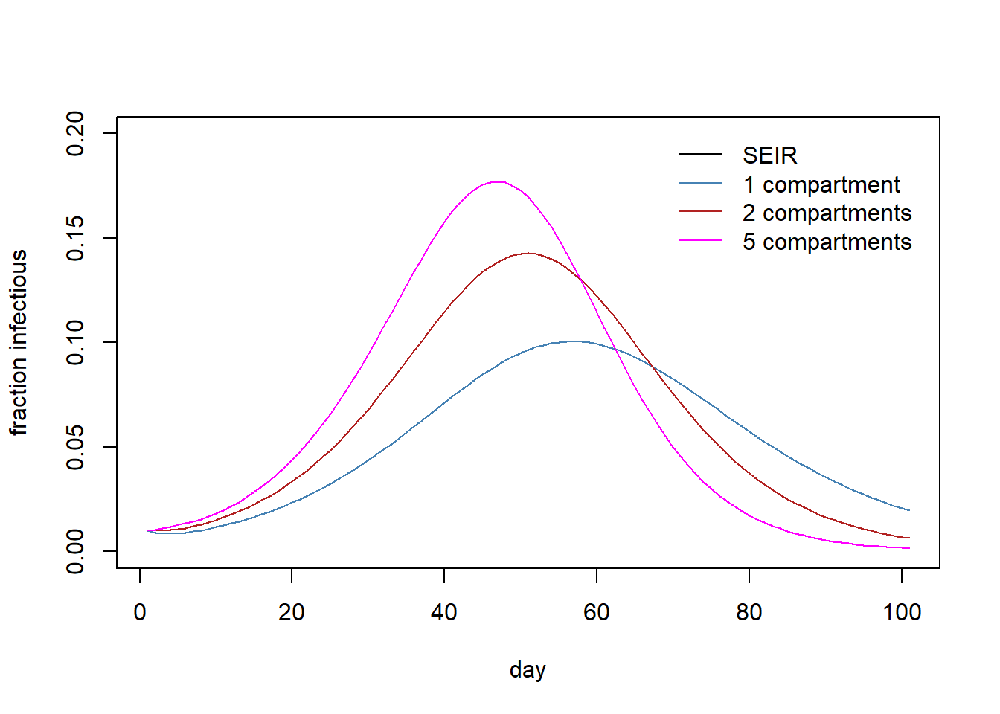

library(diffeqr)
de <- diffeqr::diffeq_setup()SEIR model with varying number of compartments
SEIR
Erlang distribution
The \(SEIR\) model structures each stage as a distinct compartment, with transitions between compartments dictated by specific rate constants, except for the transition between \(S\) and \(E\) that involve force of infection which is also a function of \(t\). Waiting times in the \(E\) and \(I\) compartments are assumed to follow an exponential distribution. However, to better reflect reality, it might be necessary to consider alternative distributions. For instance, the waiting time in the \(E\) compartment, i.e., incubation period, could be represented by a lognormal or Weibull distribution. Within the framework of ordinary differential equations (ODEs), incorporating these distributions directly poses challenges. Nevertheless, by dividing a single compartment into multiple sub-compartments, waiting times follow the Erlang distribution, effectively capturing the essence of both lognormal and Weibull distributions.
The process of adding multiple sub-compartments is relatively straightforward. The challenge arises when one wishes to dynamically adjust the number of sub-compartments within a single model framework. This post discusses a method to achieve such adaptability in model construction. To enhance model flexibility, I extensively employ strings, specifically utilizing the eval(str2lang("some text")) function.
diffeqr package
diffeqr package is used use Julia’s DifferentialEquations library
First, let’s construct the classic SEIR model for comparison. This model is equivalent to a variant with variable compartments for the \(I\) stage when considering only a single compartment.
seir <- function(u, p, t){
S <- u[1];
E <- u[2];
# the number of compartments to model the duration of infectiousness
I <- u[3];
R <- u[4];
C <- u[5];
# population size
pop <- S+E+I+R
epsilon <- p[1] # 1/latent period
gamma <- p[2] # 1/duration of infectiousness
beta <- p[3] # transmission rate
omega <- p[4] # 1/omega = duration of natural immunity
# force of infection
foi <- beta*I/pop
muEI <- epsilon
muIR <- gamma
muRS <- omega
# differential equations
dS <- - foi*S + muRS*R
dE <- foi*S - muEI*E
dI <- muEI*E - muIR*I
dR <- muIR*I - muRS*R
dC <- muEI*E
return(c(dS,dE,dI,dR,dC))
}
# simulation
R0 <- 2 # basic reproduction number
epsilon <- 1/4 # 1/epsilon = incubation period
gamma <- 1/7 # 1/gamma = duration of infectiousness
beta <- R0*gamma # instantaneous transmission rate
omega <- 1/(4*365) # natural immunity waning rate
# parameters
params <- c(epsilon=epsilon, gamma=gamma, beta=beta, omega=omega)
u0 <- c(0.99, 0, 0.01, 0, 0)
tend <- 100 #
tspan <- c(0.0, tend)
prob <- de$ODEProblem(seir, u0, tspan, params)
sol <- de$solve(prob, de$Tsit5(), saveat=1)
mat <- sapply(sol$u, identity)
udf <- as.data.frame(t(mat))
out <- cbind(data.frame(t=sol$t), udf)
names(out) <- c("t","S","E","I","R","C") \(SEIR\) model with str2lang
The model with variable compartments for the \(I\) stage. A part of the model is written using strings using paste, which are later evaluated using eval(str2lang("some string")).
seir_nstg <- function(u, p, t){
S <- u[1];
E <- u[2];
# the number of compartments to model the duration of infectiousness
nstg <- p[1]
for (i in 1:nstg) {
eval(str2lang(paste0("I",i," <- ", "u[2+",i,"]")));
}
R <- u[2 + nstg + 1];
C <- u[2 + nstg + 2];
# population size
istr_sum <- paste(sapply(1:nstg, function(x) paste0("I",x)), collapse="+")
eval(str2lang(paste0("pop <- S+E+R+", istr_sum)))
epsilon <- p[2] # 1/latent period
gamma <- p[3] # 1/duration of infectiousness
beta <- p[4] # transmission rate
omega <- p[5] # 1/omega = duration of natural immunity
# force of infection
eval(str2lang(paste0("foi <- beta*(", istr_sum, ")/pop")))
muEI <- epsilon
muIR <- gamma
muRS <- omega
# differential equations
dS <- - foi*S + muRS*R
dE <- foi*S - muEI*E
dI1 <- muEI*E - nstg*muIR*I1
#dI2, ...
if (nstg >= 2) {
for (i in 2:nstg) {
eval(str2lang(paste0("dI",i," <- ",
nstg, "*muIR*(I", i-1, "-I", i, ")")))
}
}
# dR
eval(str2lang(paste0("dR <- muIR*I", nstg, "-muRS*R")))
dC <- muEI*E
distr <- paste(sapply(1:nstg, function(x) paste0("dI", x)), collapse=",")
return(eval(str2lang(paste0("c(dS,dE,", distr, ",dR,dC)"))))
}Simulation of the variable-compartment model
run_seir_nstg <- function(nstg) {
R0 <- 2 # basic reproduction number
epsilon <- 1/4 # 1/epsilon = incubation period
gamma <- 1/7 # 1/gamma = duration of infectiousness
beta <- R0*gamma # instantaneous transmission rate
omega <- 1/(4*365) # natural immunity waning rate
# parameters
params <- c(nstg=nstg, epsilon=epsilon, gamma=gamma, beta=beta, omega=omega)
# initial distribution of the population across the states
I0s <- paste(sapply(1:nstg, function(x) paste0("I", x,"=0")), collapse=",")
eval(str2lang(paste0("u0 <- c(S=0,E=0,", I0s,",R=0,C=0)")))
u0[c("S","E","I1","R")] <-
c(0.99, 0, 0.01, 0) # all I in the first compartment of the nstg I compartments
tend <- 100 #
tspan <- c(0.0, tend)
prob <- de$ODEProblem(seir_nstg, u0, tspan, params)
sol <- de$solve(prob, de$Tsit5(), saveat=1)
mat <- sapply(sol$u, identity)
udf <- as.data.frame(t(mat))
out <- cbind(data.frame(t=sol$t), udf)
In <- paste(sapply(1:nstg, function(x) paste0('"I', x, '"')), collapse=",")
names(out) <- eval(str2lang(paste0('c("t","S","E",', In, ',"R","C")')))
return(out)
}
nstg <- 1
In <- paste(sapply(1:nstg, function(x) paste0('"I', x, '"')), collapse=",")
out1 <- run_seir_nstg(nstg=nstg)
It1 <- out1[,"I1"]
nstg <- 2
In <- paste(sapply(1:nstg, function(x) paste0('"I', x, '"')), collapse=",")
out2 <- run_seir_nstg(nstg=nstg)
eval(str2lang(paste0('It2 <- rowSums(out2[,c(', In, ')])')))
nstg <- 5
In <- paste(sapply(1:nstg, function(x) paste0('"I', x, '"')), collapse=",")
out5 <- run_seir_nstg(nstg=nstg)
eval(str2lang(paste0('It5 <- rowSums(out5[,c(', In, ')])')))Plot the simulation results.
# png(filename="seir_multi_comp.png")
plot(1:nrow(out), out$I, type="l", ylim=c(0,0.2),
ylab="fraction infectious",
xlab="day", col="black")
lines(1:nrow(out), It1, col="steelblue")
lines(1:nrow(out), It2, col="firebrick")
lines(1:nrow(out), It5, col="magenta")
legend("topright",
legend=c("SEIR","1 compartment","2 compartments", "5 compartments"),
col=c("black","steelblue", "firebrick","magenta"),
lty= 1,
bty = "n",
cex = 1.0,
text.col = "black",
horiz = F ,
inset = c(0.02,0.02))
# dev.off()